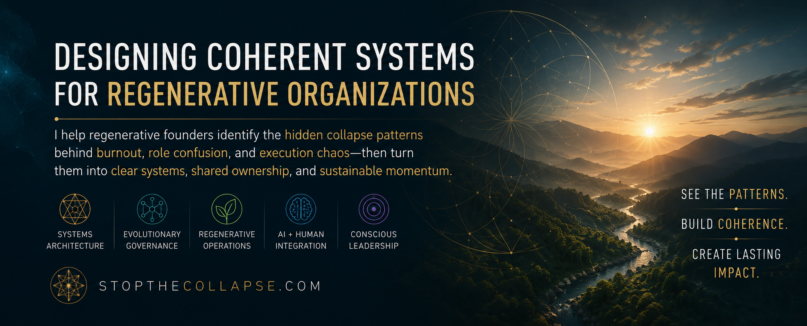
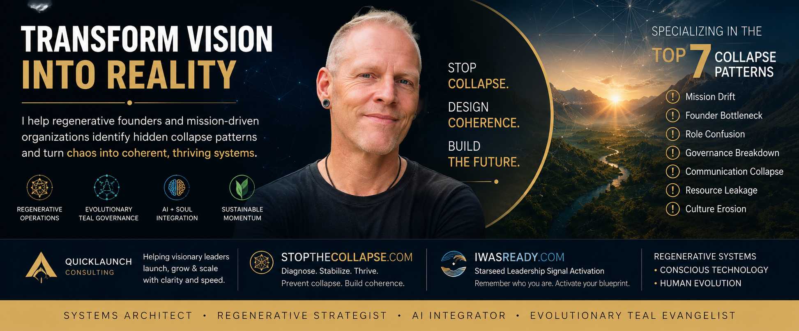

Systems Architecture
Operating structures that clarify roles, ownership, decision paths, and execution rhythm.

A regenerative operational architect helping mission-driven founders identify hidden collapse patterns, stabilize their systems, and turn vision into functional reality.
Coherence Architecture
Rick works at the intersection of regenerative ideals, functional operations, evolutionary teal governance, AI-integrated systems, and conscious leadership.
The work is diagnostic before it is promotional. It helps people name the pattern underneath burnout, role confusion, governance drift, execution chaos, and founder overload.
What Rick Actually Does
Operating structures that clarify roles, ownership, decision paths, and execution rhythm.
Distributed intelligence with accountability, maturity, and clear authority.
Practical systems for founders and teams trying to scale without becoming extractive.
Conscious technology workflows that support coherence instead of adding more noise.
Diagnostic Gateway
Most visionary projects do not fail because the vision is wrong. They fail because the structure cannot hold the vision.
Diagnose the pattern →The original purpose becomes diluted by urgency, conflict, or survival mode.
Too much meaning, power, and decision velocity depend on too few people.
Unclear authority and ownership create friction, resentment, and duplicate work.
Ambiguity around decisions turns collaboration into avoidance or power struggle.
What remains unsaid becomes the hidden architecture of the system.
Energy, money, time, and attention drain through unresolved structural gaps.
The soul of the project disappears while the language of the mission remains.
Consciousness without operational integrity collapses. Operations without consciousness become extractive. The future belongs to systems that integrate both.
Entity Hub
RickBroider.com acts as the central identity node connecting consulting, diagnostics, books, media, AI systems, governance frameworks, and relational infrastructure.
Strategic launch and growth for mission-driven visionaries.
Diagnose, stabilize, and rebuild coherence before the system breaks.
Starseed leadership signal activation and remembrance work.
Book and media ecosystem for future-human identity and mythic orientation.
Relational infrastructure for aligned people, projects, and communities.

AI + Soul
Rick’s AI work is not about novelty or automation for its own sake. It is about building systems that reduce noise, clarify decisions, preserve human context, and help mission-driven people act from alignment.
This is conscious technology as operational support: human-centered, accountable, emotionally intelligent, and grounded in real implementation.
Next Step
Use this as the front door for consulting inquiries, diagnostic work, podcast and speaking invitations, ecosystem participation, and strategic collaboration.
Start the conversation →